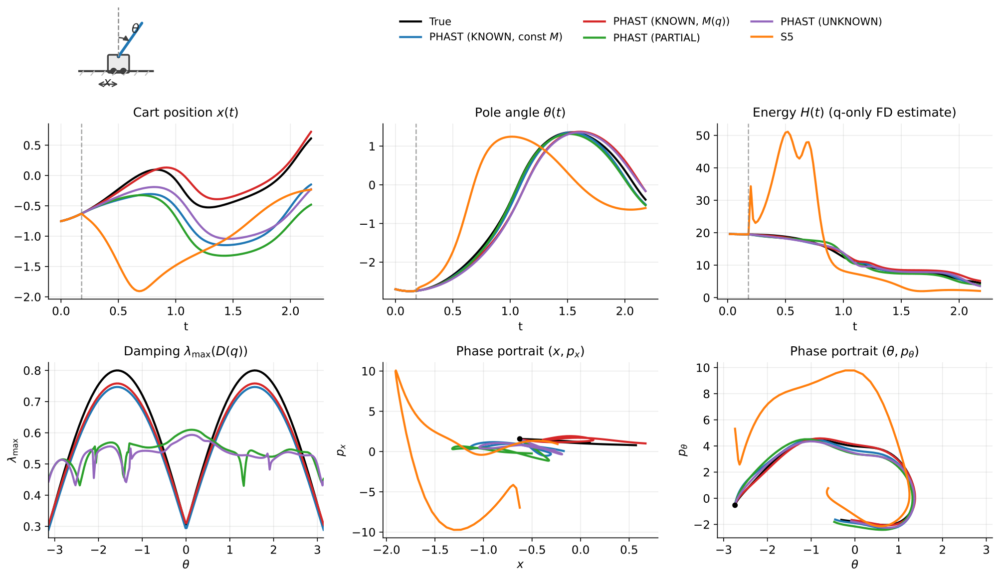

PHAST
Position-only forecasting, explicit port-Hamiltonian components, three information contracts, and the distinction between forecasting and physical identification.
Open live posterPHAST asks what can be forecast and physically recovered from position histories. C-PHAST asks how reusable physical models can compare candidate robot futures before execution.

Position-only forecasting, explicit port-Hamiltonian components, three information contracts, and the distinction between forecasting and physical identification.
Open live posterComposable physical blocks, action-conditioned rollouts, typed consequences, objective switching, robot transfer, and executed recovery-command selection.
Open live poster